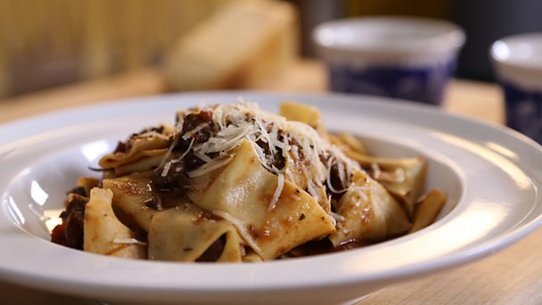

Wild boar ragù

This slow-cooked stew of wild boar with juniper berries and black olives is great served with freshly cooked pappardelle pasta and shavings of parmesan.
Ingredients
- 700g/1lb 9oz boneless wild boar shoulder
- 4-5 tbsp sunflower oil
- 4 rashers rindless smoked streaky bacon or pancetta, cut into 1cm/½in slices
- 1 large onion, finely chopped
Steps
-
Cut the boar into chunky pieces, each around 2.5cm/1in. Trim off any really hard fat or sinew as you go. Season the meat really well with salt and pepper. Heat two tablespoons of the oil in a large frying pan.
- Fry the boar in two batches over a medium-high heat until nicely browned on all sides, turning every now and then and adding more oil if necessary. As soon as the boar is browned, transfer to a large flameproof casserole or large saucepan.
- MPour a little more oil into the pan in which the boar was browned and fry the bacon for 2-3 minutes, or until the fat crisps and browns. Scatter over the meat. Add a touch more oil to the frying pan and fry the chopped onion over a low heat for five minutes, stirring often until beginning to soften.